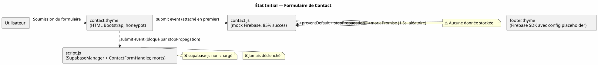
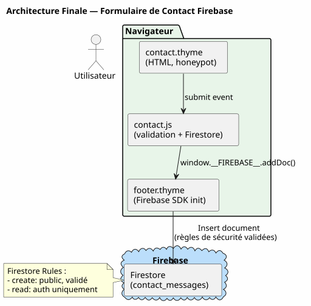

Migration Supabase → Firebase : Brancher un Formulaire de Contact sur Firestore Sans Backend
Yayınlandı: 29 April 2026
- Sahne: hiçbir şey saklamayan bir form
- Neden Supabase yerine Firebase?
- Aşama 1: Firebase projesini oluştur
- Aşama 2: Gönderim JavaScript’ini yeniden yaz
- Aşama 3: Supabase’deki ölü kodu temizle
- Aşama 4: Altbilgiyi yapılandır
- Aşama 5: Nihai Mimari
- Bu migrasyonun dogfooding hakkında söyledikleri
- Sonraki adımlar (backlog)
- Referanslar
Aylar boyunca bu sitenin iletişim formu bir JavaScript mock’u üzerinde çalıştı — %85 başarı olasılığı olan bir Promise, sahte bir Firestore, sıfır depolanmış veri. İlk plan, e-posta bildirimleri için Google Apps Script ile bir Supabase arka ucu öngörüyordu. Terk edildi. Bugün Firebase Firestore’a geçişi anlatıyorum: proje oluşturma, güvenlik kuralları, JS’in yeniden yazılması, Supabase ölü kodunun temizlenmesi. Ve bu seçimin geliştirme felsefesi hakkında neden daha geniş bir şey söylediğini.
Sahne: hiçbir şey saklamayan bir form
Bu site, Gradle eklentim olan JBake tarafından oluşturuluyor`bakery`. %100 statik — backend yok, veritabanı yok. Ancak bir iletişim formum var. Sayfa`contact.html`mevcut, HTML hazır (ad, e-posta, telefon, konu, mesaj alanları, HTML5 doğrulaması, anti-spam honeypot), Bootstrap stilleri yerinde. Görsel olarak her şey mükemmel.
Ancak gönderim sırasında hiçbir şey olmuyor.
const firebaseMock = new Promise((resolve, reject) => {
setTimeout(() => {
if (Math.random() < 0.85) {
resolve({ status: 201, message: 'Message stored in Firestore.' });
} else {
reject({ status: 500, message: 'Firestore write failed.' });
}
}, 1500);
});Bir mock. Sahte bir vaat. Kullanıcı bir spinner görür, ardından « Mesaj başarıyla gönderildi! » mesajını görür. Ancak veriler boşluğa gider. Hiçbir mesaj hiçbir yerde saklanmaz.
Durum kırık bir formdan daha kötü — bu, yalan söyleyen bir form.
Supabase mirası
Başlangıçtaki plan, … içinde belgelenmiş`content/draft/integration_formulaire_contact_supabase.adoc`, öngörüyordu:
-
Tablolu bir Supabase veritabanı`contacts`ve Satır Düzeyi Güvenlik
-
Bir RPC`handle_contact_form`sunucu tarafı
-
Google Apps Script webhook’unu çağıran bir SQL tetikleyicisi
-
Gmail bildirim e-postası gönderen Google Apps Script
Karşılık gelen JavaScript kodu hâlâ içinde bulunmaktadır`script.js`. Bir sınıf var`SupabaseManager`bir Supabase istemcisini global değişkenlerle başlatan`SUPABASE_URL` et SUPABASE_KEY, ve bir sınıf`ContactFormHandler`formun submit olayını dinleyen ve çağıran`SupabaseManager.submitContactForm()`.
Sorun: bu global değişkenler artık footer’a enjekte edilmiyor.`<script src="supabase-js">`kaldırıldı. Kod çağırıyor`supabase.createClient()`bir değişken üzerinde`supabase`artık var olmayan. Yani:
console.error : 'Supabase client library (supabase-js) is not loaded.'Veriler yalnızca saklanmıyor, aynı zamanda gönderim kodu da ölü.
Hayalet çift gönderim
Daha da kötüsü, birsessiz rekabetaynı form üzerindeki iki handler arasında:
-
`contact.js`submit’i dinle, Firebase mock’unu çağır
-
script.js— üzerinden`ContactFormHandler`— ayrıca submit’i dinle, çağır`SupabaseManager`
İkisi de yapar`event.preventDefault() + event.stopPropagation(). Gibi`contact.js`ilk olarak içine yüklenir`footer.thyme, onun işleyicisi önce eklenir. Yayılmayı engeller.`ContactFormHandler`asla tetiklenmeyecek.
Bu aktif bir hata bile değil — bu bir zombi. Hiç çalışma fırsatı bulamayan kod.

Neden Supabase yerine Firebase?
Geçiş kararı … içinde belgelenmiştir`AGENT.adoc`:
Firebase artık şu nedenlerle seçildi: daha iyi ücretsiz plan, yerleşik Firestore, entegre Cloud Functions, daha uygun Google ekosistemi. Mevcut Supabase uygulaması « ⚠️ Terk Edildi » olarak işaretlendi.
Ücretsiz planın ötesinde mimari bir neden var. Bu site Google ekosisteminde yaşıyor: hedef depo`cheroliv.github.io`, CNAME GitHub Pages’e işaret eder, Gradle derlemesi Git üzerinden GitHub’a push yapar. Üçüncü taraf bir hizmet (Supabase) yerine bir Google hizmeti (Firebase) eklemek dağılım yüzeyini azaltır.
Firestore’un native modu (Datastore modu değil), aklımdaki NoSQL belge zihinsel modeline de daha yakındır: koleksiyonlar, belgeler, tiplendirilmiş alanlar, sunucu zaman damgaları, yerleşik güvenlik kuralları.
Aşama 1: Firebase projesini oluştur
Başlatma
Firebase CLI makinemde kurulu olmadığı için web konsolunu kullanıyorum:
-
Githttps://console.firebase.google.com/[Firebase Konsolu]
-
Proje oluştur`cheroliv-contact`(veya mevcut bir projeyi yeniden kullanın)
-
Firestore’u yerel modda etkinleştir (Datastore değil)
-
Bölgede bir veritabanı oluştur`eur3`(Avrupa)
Bizimki gibi minimalist bir kullanım için (tek bir koleksiyon, herkese açık yazma), yerel mod doğru seçimdir. Karmaşık Datastore kurallarına gerek yok.
Firestore Güvenlik Kuralları
Form herkese açık — herkes mesaj gönderebilir. Ancak kötüye kullanımı sınırlamak istiyorum:
rules_version = '2';
service cloud.firestore {
match /databases/{database}/documents {
match /contact_messages/{messageId} {
// Lecture : admin uniquement (authentifié)
allow read: if request.auth != null;
// Écriture : publique, mais limitée
allow create: if request.auth == null
&& request.resource.data.name is string
&& request.resource.data.name.size() >= 1
&& request.resource.data.name.size() <= 100
&& request.resource.data.email is string
&& request.resource.data.email.matches('.*@.*\\..*')
&& request.resource.data.email.size() <= 254
&& request.resource.data.subject is string
&& request.resource.data.subject.size() >= 3
&& request.resource.data.subject.size() <= 200
&& request.resource.data.message is string
&& request.resource.data.message.size() >= 10
&& request.resource.data.message.size() <= 5000
&& request.resource.data.created_at == request.time
&& request.resource.data.user_agent is string
&& request.resource.data.user_agent.size() <= 500;
}
}
}Önemli noktalar:
-
allow read— yalnızca kimliği doğrulanmış kullanıcılar mesajları okuyabilir (ben, Firebase konsolu üzerinden) -
allow create— herkes bir belge oluşturabilir, ancak alan doğrulaması ile -
Sunucu tarafı doğrulama: min/maks boyutlar, e-posta formatı,
created_at`karşılık gelmelidir`request.time(sahteciliğe karşı) -
`user_agent`izlenebilirlik için gönderilir (kritik değil ama faydalı)
Bu kurallar basit bir …den daha katıdır`allow write: if true;`. Bunlar, bir saldırganın devasa payload’lar veya hatalı biçimlendirilmiş alanlar enjekte etmesini engeller.
Aşama 2: Gönderim JavaScript’ini yeniden yaz
Sözleşme basit:
-
Form verilerini oku
-
Honeypot’u kontrol et (alan`hp_name`— eğer doldurulmuşsa, bu bir bottur, hiçbir şey göndermeden bir başarı simüle ediyoruz)
-
Ara`addDoc(window.FIREBASE.collection(db, "contact_messages"), {…})`
-
Başarı veya hatayı göster
window.FIREBASE` bağımlılığı
İçinde`footer.thyme`, bir modül betiği Firebase SDK’yı başlatır ve global bir nesne açığa çıkarır:
<script type="module">
import { initializeApp } from "https://www.gstatic.com/firebasejs/11.6.0/firebase-app.js";
import { getFirestore, collection, addDoc, serverTimestamp }
from "https://www.gstatic.com/firebasejs/11.6.0/firebase-firestore.js";
const firebaseConfig = { /* valeurs réelles */ };
const app = initializeApp(firebaseConfig);
const db = getFirestore(app);
window.__FIREBASE__ = { db, collection, addDoc, serverTimestamp };
</script>Modül betikleri önce çalıştırılır`DOMContentLoaded`, yani`window.FIREBASE`işleyici olduğunda kullanılabilir olması garanti edilir`contact.js`tetiklenir. Önlem olarak, yine de CDN’nin yavaş olması ihtimaline karşı 5 saniyelik bir polling ekliyorum.
Yeni `contact.js
document.addEventListener('DOMContentLoaded', function () {
'use strict';
const form = document.getElementById('contact-form');
if (!form) return;
const submitButton = form.querySelector('button[type="submit"]');
const successMessage = document.getElementById('contact-success-message');
const errorMessage = document.getElementById('contact-error-message');
// Éléments de validation
const nameInput = form.querySelector('input[name="name"]');
const emailInput = form.querySelector('input[name="email"]');
const phoneInput = form.querySelector('input[name="phone"]');
const subjectInput = form.querySelector('input[name="subject"]');
const messageInput = form.querySelector('textarea[name="message"]');
const honeypotInput = form.querySelector('input[name="hp_name"]');
/**
* Attend que window.__FIREBASE__ soit disponible.
* Timeout de 5 secondes — si le CDN Firebase est lent, on abandonne.
*/
function waitForFirebase(timeoutMs = 5000) {
return new Promise((resolve, reject) => {
if (window.__FIREBASE__) {
resolve(window.__FIREBASE__);
return;
}
const start = Date.now();
const interval = setInterval(() => {
if (window.__FIREBASE__) {
clearInterval(interval);
resolve(window.__FIREBASE__);
} else if (Date.now() - start > timeoutMs) {
clearInterval(interval);
reject(new Error('Firebase SDK non disponible après timeout'));
}
}, 100);
});
}
// --- Validation (identique à l'existant) ---
function validateForm() {
nameInput.setCustomValidity('');
emailInput.setCustomValidity('');
if (phoneInput) phoneInput.setCustomValidity('');
subjectInput.setCustomValidity('');
messageInput.setCustomValidity('');
if (nameInput.value.trim().length < 1) {
nameInput.setCustomValidity('Veuillez saisir votre nom.');
}
const emailPattern = /^[^\s@]+@[^\s@]+\.[^\s@]+$/;
if (!emailPattern.test(emailInput.value.trim())) {
emailInput.setCustomValidity('Veuillez saisir une adresse email valide.');
}
if (phoneInput && phoneInput.value.trim() !== '') {
const phonePattern = /^\d{10,15}$/;
if (!phonePattern.test(phoneInput.value.trim())) {
phoneInput.setCustomValidity('Veuillez saisir un numéro valide (10 à 15 chiffres).');
}
}
if (subjectInput.value.trim().length < 3) {
subjectInput.setCustomValidity('Veuillez saisir un sujet (3 caractères minimum).');
}
if (messageInput.value.trim().length < 10) {
messageInput.setCustomValidity('Veuillez saisir un message (10 caractères minimum).');
}
form.classList.add('was-validated');
return form.checkValidity();
}
// --- Handler de soumission ---
form.addEventListener('submit', async function (event) {
event.preventDefault();
event.stopPropagation();
if (!validateForm()) return;
// Honeypot : si rempli, simuler un succès sans rien envoyer
if (honeypotInput && honeypotInput.value.trim() !== '') {
successMessage.style.display = 'block';
form.reset();
form.classList.remove('was-validated');
return;
}
// UI : état d'envoi
submitButton.disabled = true;
submitButton.innerHTML = `
<span class="spinner-border spinner-border-sm" role="status" aria-hidden="true"></span>
Envoi en cours...
`;
successMessage.style.display = 'none';
errorMessage.style.display = 'none';
try {
const fb = await waitForFirebase();
const messagesCollection = fb.collection(fb.db, 'contact_messages');
await fb.addDoc(messagesCollection, {
name: nameInput.value.trim(),
email: emailInput.value.trim(),
phone: phoneInput ? phoneInput.value.trim() : '',
subject: subjectInput.value.trim(),
message: messageInput.value.trim(),
created_at: fb.serverTimestamp(),
user_agent: navigator.userAgent.substring(0, 500)
});
successMessage.style.display = 'block';
form.reset();
form.classList.remove('was-validated');
} catch (error) {
console.error('Erreur Firestore:', error);
errorMessage.style.display = 'block';
} finally {
submitButton.disabled = false;
submitButton.innerHTML = `
<i class="bi bi-send me-2"></i>
Envoyer le Message
`;
}
}, false);
});Mock’a göre değişiklikler:
-
waitForFirebase()— zaman aşımıyla polling, CDN yavaş olsa bile dayanıklı -
honeypot— eğer gizli alan`hp_name`doldurulur, Firestore çağrısı olmadan bir başarı simüle et. Bot başardığını sanır ama hiçbir şey saklanmaz -
addDoc(collection, {…})— gerçek Firestore çağrısı ile`serverTimestamp()` etuser_agent -
Hata yönetimi ile`try/catch`asenkron
-
Temizliği`finally`(düğmenin geri yüklenmesi)
|
Neden`user_agent`? İsteğe bağlıdır ama teşhis için faydalıdır. Garip bir mesaj gelirse, bunun masaüstü tarayıcıdan, mobilden mi yoksa bir curl betiğinden mi geldiğini bilmek ayıklamaya yardımcı olur. |
Aşama 3: Supabase’deki ölü kodu temizle
`script.js`250 satır ölü kod içeriyor:
-
SupabaseManager(satırlar 417-481) — 65 satır -
ContactFormHandler(satırlar 490-551) — 62 satır -
Başlatma bloğu (satırlar 645-654) — 10 satır
Toplam: ~140 satır silinecek.
Blok`DOMContentLoaded`bir tane oluştur`SupabaseManager`sonra bir`ContactFormHandler`formaya bağlı. Yukarıda açıklandığı gibi, bu kod hiçbir zaman çalıştırılmaz (tarafından engellenir`contact.js`), ve çalıştırılsa bile başarısız olurdu (Supabase SDK yüklü değil).
Siliyorum:
-
Sınıf`SupabaseManager`
-
Sınıf`ContactFormHandler`
-
başlatma bloğu içinde`DOMContentLoaded`(645-654. satırlar)
Le reste de script.js`sağlam:`ThemeManager, ScrollToTopButton, MobileMenuManager, SmoothScrollWithOffset, NavbarHeightUpdater, DynamicNavbarBreakpoint, CodeBlockManager, TooltipManager, PhoneInputManager.
Aşama 4: Altbilgiyi yapılandır
`footer.thyme`zaten Firebase boilerplate’ine sahip ancak yer tutucu değerlerle. Değiştiriyorum:
const firebaseConfig = {
apiKey: "REMPLACER_PAR_VOTRE_API_KEY",
authDomain: "REMPLACER_PAR_VOTRE_AUTH_DOMAIN",
projectId: "REMPLACER_PAR_VOTRE_PROJECT_ID",
storageBucket: "REMPLACER_PAR_VOTRE_STORAGE_BUCKET",
messagingSenderId: "REMPLACER_PAR_VOTRE_SENDER_ID",
appId: "REMPLACER_PAR_VOTRE_APP_ID"
};Şuradan alınan gerçek değerlerleProje Ayarları > Genel > Uygulamalarınız > Web uygulamasıFirebase konsolunda.
Değerler hassastır (apiKey`Firebase’de tasarım gereği herkese açıktır, ancak bunları düz metin olarak commit etmemeyi tercih ediyorum). Bunları şurada saklıyorum`site.yml(zaten içinde`.gitignore`) ve eklenti`bakery`bunları, build tarafında eklenecek bir mantık aracılığıyla şablona enjekte eder.
Şimdilik, onları doğrudan içine koyuyorum`footer.thyme`— derleme`./gradlew serve`onları yerel olarak yükleyecek. Dağıtımda, enjeksiyonu şuraya taşıyacağım`site.yml`veya bir Gradle değişkenine.
|
L'`apiKey`Firebase değildiradımbir sır. O, tasarım gereği kamusaldır. Verilerinizi koruyan şey, …Firestore güvenlik kuralları, API anahtarı değil. Onu bir … içine koymayın`.env`sunucu tarafında yüklendi — tarayıcıya sunulmak üzere tasarlanmıştır. |
Aşama 5: Nihai Mimari

Bu migrasyonun dogfooding hakkında söyledikleri
Bu site kendi Gradle eklentim tarafından oluşturuluyor.bakery. İletişim formu sitenin içinde yer alır. Supabase → Firebase geçişi şurada belgelenmiştir:`AGENT.adoc`, backlog’da tartışılır, aracılığıyla test edilir`./gradlew serve`, ve bir blog yazısı oluşturur (şu anda okuduğunuz).
Bu saf bir dogfooding. Site eklentinin ürünü, eklenti geliştiricinin ürünü, geliştirici de süreci sitenin kendisinde belgeliyor.
Döngü tamamlandı.
Aylarca bir mock’u sürüklemek (formun sessizce yalan söylediği bütün oturumlar) bana bir şey fark ettirdi: kişisel bir statik sitenin backlog’u asla "bitmez". Her zaman öncelikli bir kullanıcı hikâyesi vardır, her zaman taslakta bir makale vardır, her zaman bir şablonda yorum satırına alınmış bir bölüm vardır. Disiplin her şeyi bitirmek değil — kullanıcının gördüğü şeyi bitirmektir.
Bozuk bir iletişim formu, hiç form olmamasından daha kötüdür. Bu, tutulmamış bir vaattir.
Değişikliklerin özeti
Dosya |
Değişiklik |
Etki |
|
Makale oluşturma |
Dokümantasyon |
|
Yeniden yazım (mock → gerçek Firestore) |
İşlevsel |
|
SupabaseManager + ContactFormHandler + init bloğunun kaldırılması |
Temizlik |
|
Yapılandırma yer tutucusunu değiştirme → gerçek değerler |
Yapılandırma |
Sonraki adımlar (backlog)
-
Bildirim e-postası: Bir Cloud Function`onCreate`üzerinde`contact_messages`SendGrid üzerinden e-posta gönderen. Form kaydediyor, ancak bana bildirim gelmiyor. Orta öncelik — mesajlar Firebase konsolunda görünüyor.
-
İstemci tarafında hız sınırlama: Art arda çoklu gönderimleri önlemek için localStorage’a bir zaman damgası ekleyin. Honeypot saf botları engeller, bir hız sınırlayıcı ise biraz daha akıllı botları engeller.
-
Testler: Formu gönderen ve belgenin Firestore’da göründüğünü doğrulayan bir Playwright testi. Şimdilik manuel olarak şunun aracılığıyla test ediyorum`./gradlew serve`.